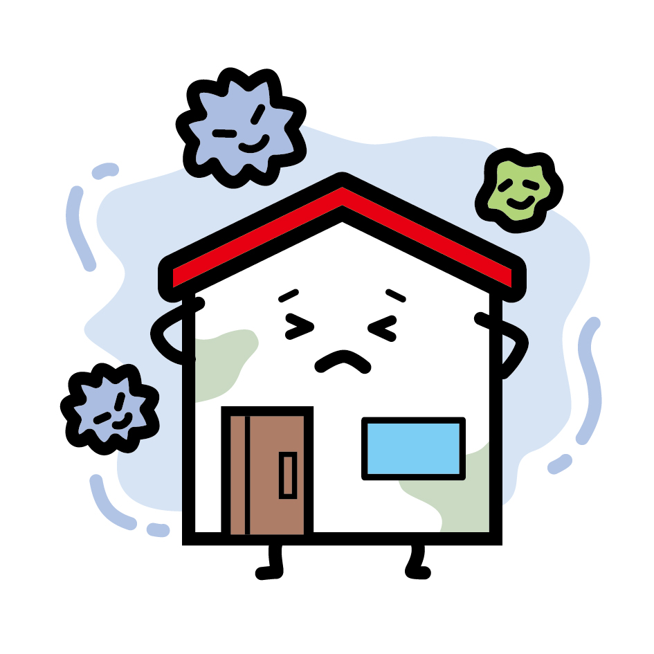
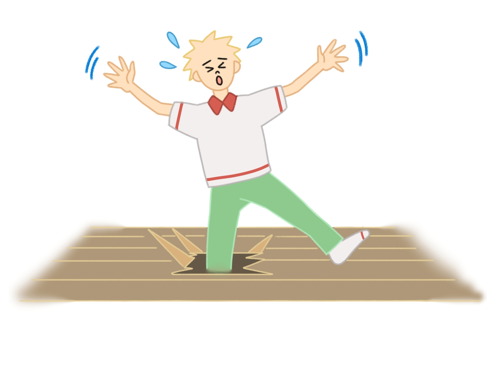
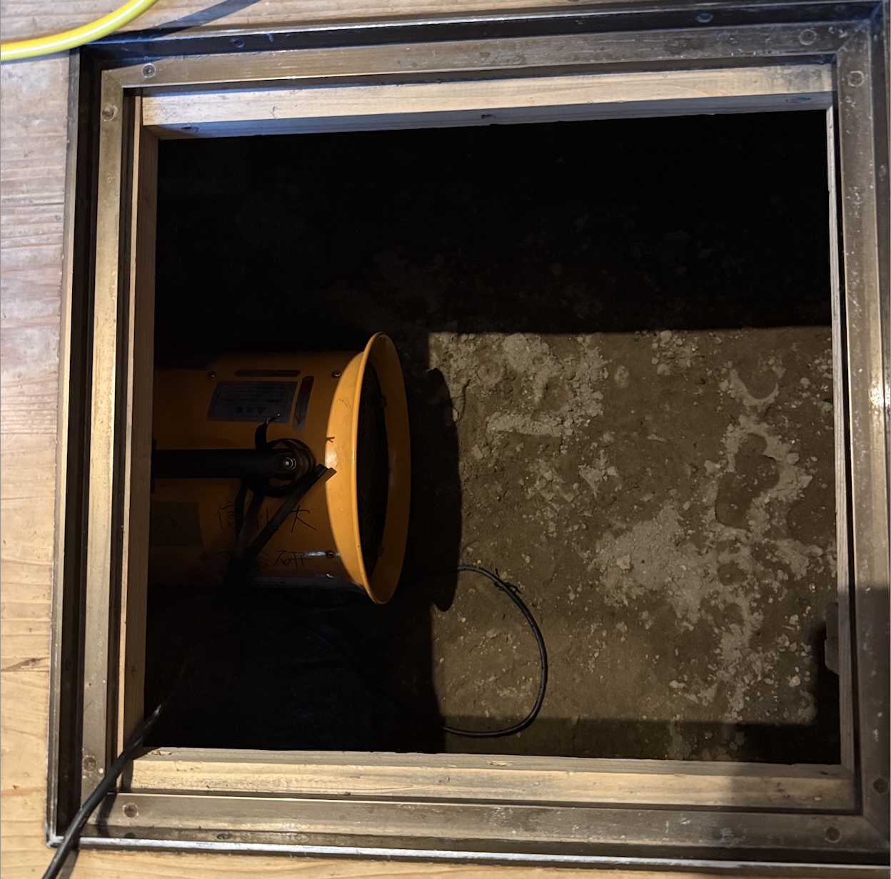

水害後の床下乾燥はなぜ必要？
水害で建物が水に浸かった場合、床下の乾燥がとても大切です！
床下が乾いていないと、どうなるの？
- カビや雑菌が発生しやすくなります
- 家の木材が腐りやすくなります
- 悪臭や健康被害（アレルギー・喘息など）のおそれがあります
- 害虫（シロアリなど）が増えやすくなります

放っておくと、家はどうなるの？
- 床がブヨブヨしたり、沈んだりする
- 家の寿命が短くなる
- リフォームや修理に多くのお金がかかる

どんな風に乾燥させるの？

床下点検口、床下をみれるところがないときは
- 床下収納庫の容器をはずしてみる
- 和室の床板をはずしてみる
- Diy、建築会社に連絡する、数万円で対応していただけます
床下をしっかり乾燥させることで、家を守り、健康にもつながります。
分からないことがあれば、市役所や専門業者に相談しましょう！
参考情報